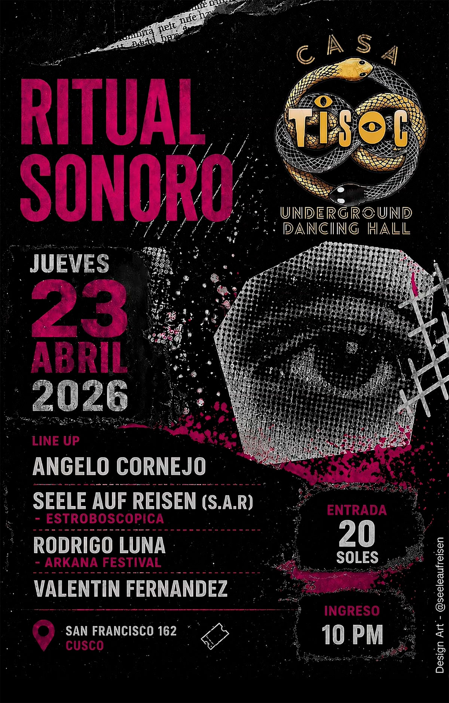

RITUAL SONORO
fecha: 23/04/26 hora: 10pm
lugar: Casa Tisoc,
Plaza San Francisco 162, Cusco


⚫️ RITUAL SONORO ⚫️
En el corazón de Cusco, donde lo oculto cobra vida, existe un espacio reservado para quienes buscan más que una fiesta… una experiencia.
Este jueves 23 de abril, las puertas de Casa Tisoc se abren para un viaje sonoro profundo, una conexión entre cuerpo, mente y frecuencia. Un ritual donde la música electrónica underground se convierte en lenguaje y la pista en un portal.
🔊 LINE UP
— Angelo Cornejo
— Seele Auf Reisen (S.A.R)
— Rodrigo Luna
— Valentín Fernández
🕙 Ingreso: 10 PM
Sumérgete en una atmósfera cruda, íntima y envolvente. Luces, texturas y sonidos diseñados para perderte… y encontrarte en el proceso.
Esto no es solo una fiesta.
Es un ritual.
📍 Cusco — Casa Tisoc @casa_tisoc
#RitualSonoro #UndergroundCusco #djlifestyle #TechnoCulture #CasaTisoc